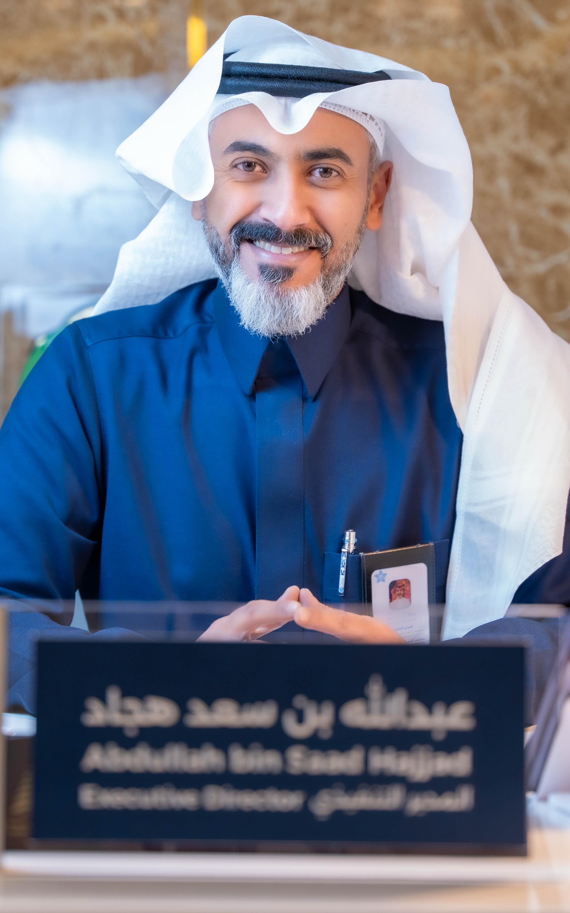

Hospital Operations
Service continuity, operational coordination, performance monitoring, and execution across hospital functions.
Healthcare executive focused on hospital leadership, operational performance, patient experience, quality of care, patient safety, and sustainable healthcare improvement.

Abdullah S. Hajjad is a Saudi healthcare executive with extensive experience in hospital management and health services administration. His professional focus is translating strategy into operational improvement through multidisciplinary leadership, clear accountability, data-informed decisions, and a strong focus on patient experience and quality of care.
عبدالله هجاد قيادي تنفيذي في القطاع الصحي السعودي، تتركز خبرته في إدارة المستشفيات والخدمات الصحية، وتحويل الخطط الاستراتيجية إلى تحسينات تشغيلية قابلة للقياس، مع التركيز على تجربة المستفيد وجودة الرعاية وسلامة المرضى والعمل القيادي متعدد التخصصات.
A practical leadership approach centered on hospital performance, coordinated care delivery, patient-centered services, and sustainable operational improvement.
Service continuity, operational coordination, performance monitoring, and execution across hospital functions.
Improving Emergency Department flow, reducing delays, and strengthening cross-department escalation and accountability.
Supporting reliable care delivery, continuous improvement, and safe operational practices.
Aligning operational decisions with beneficiary needs, service quality, and measurable experience improvement.
Turning strategic priorities into clear actions, ownership, follow-through, and sustainable results.
Building shared accountability and enabling clinical and administrative teams to work toward common outcomes.
Executive leadership experience spanning hospital operations, patient experience, quality, and health services management in Saudi Arabia.
Leading hospital operations with emphasis on service continuity, patient safety, quality, patient experience, workforce coordination, and operational performance.
Applied executive leadership focused on reducing waiting times and improving patient flow while maintaining safe, high-quality care.
Leadership built around clear accountability, multidisciplinary collaboration, measurable improvement, and sustainable execution.
Formal education in health services management complemented by executive leadership development.
Management of Health Services · University of Bisha
2025 · GPA 4.63/5 · Excellent with Second Class HonorsHealth Services and Hospital Management · King Abdulaziz University
2015 · GPA 3.93/5 · Very GoodExecutive education delivered in collaboration with Health Holding Company and IESE Business School
February–September 2026For professional background, healthcare leadership updates, and executive education milestones, connect through LinkedIn.